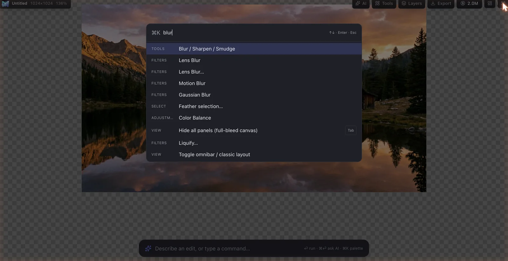
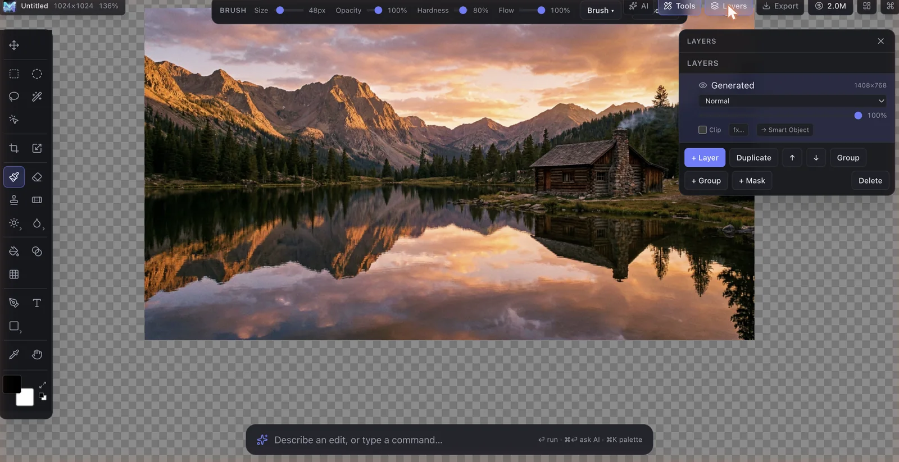
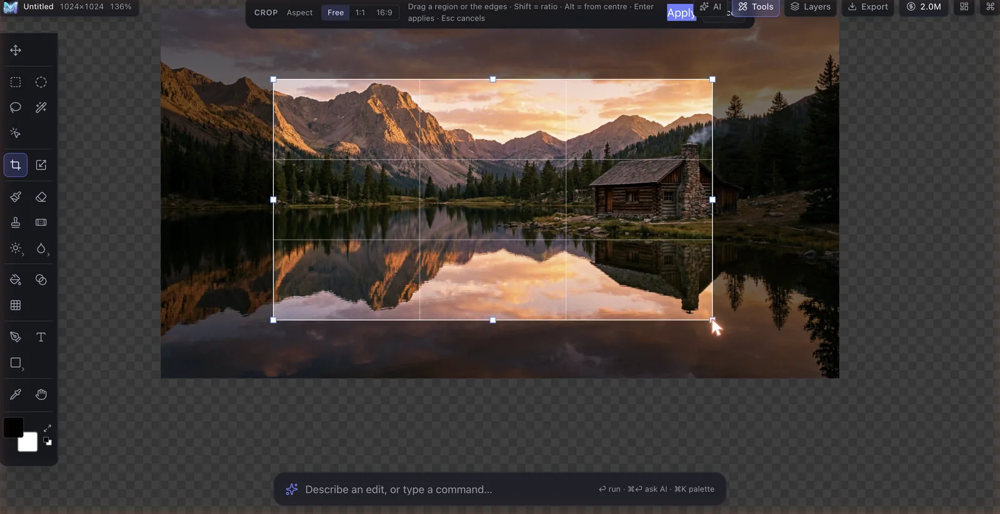

Quick start
Glimmer opens on an empty canvas. There are four ways to begin:
- Generate — type a description in the bar at the bottom (the omnibar) and press ⏎. The assistant generates an image as your first layer.
- Open — click Open image, or drag a file anywhere onto the canvas.
- Paste — copy an image elsewhere and press ⌘V.
- New blank document — run New document from the ⌘K palette.
The workspace
Glimmer has two layouts that share the same engine and document — switch any time; nothing is lost.
Omni (default)
A full-screen canvas with a single floating omnibar and minimal corner chrome. The omnibar fuses the AI prompt and the command palette: type a sentence to talk to the assistant, or a keyword to run a command. Everything else — tools, panels, options — is summoned on demand and floats over the canvas. Press Tab to hide all chrome for a full-bleed view.

Classic
The familiar docked layout: a top menu bar (File / Edit / Image / Filter / Liquify / Lens Blur / Select), the tool rail, and a right-hand dock with tabs for the assistant, adjustments, history, paths, swatches and channels. Toggle it from the corner chrome (or run Toggle omnibar / classic layout).
Command palette
Press ⌘K (or click the ⌘K chip) to open the palette. Type to fuzzy-search any action by name — tools, adjustments, filters, AI tools, panels, view toggles, selection ops and file commands — then ⏎ to run it. This is what lets the chrome stay hidden on a small screen.

The omnibar shares the same registry: a keyword that tightly matches a command runs it; a full sentence goes to the assistant. Force the assistant any time with ⌘⏎.
Tools
The tool rail is a two-column grid; grouped tools (dodge/burn, blur/sharpen/smudge, shapes) open a flyout. Pick a tool and its options appear in the contextual bar. Brush-like tools show a live ring cursor at the brush size; the clone/heal tools show a “set source” target while you hold ⌥.
| Group | Tools |
|---|---|
| Move | Move V, Hand/pan H |
| Select | Rectangle & ellipse marquee M, Lasso L, Magic wand W, Magic Select (AI) A |
| Frame | Crop C, Free transform T |
| Paint | Brush B, Eraser E, Paint bucket K, Gradient G, Pattern stamp |
| Retouch | Clone stamp S, Healing brush J, Dodge / Burn O, Blur / Sharpen / Smudge |
| Vector & type | Pen P, Type Y, Shape U |
| Sample | Eyedropper I |
Modifier keys
- Shift — constrain proportions: a square/circle marquee, a square or start-ratio crop, 45° lines & gradients.
- ⌥ / Alt — draw/resize from the centre (marquee & crop); set the clone source; convert a pen anchor to a corner while dragging its handle.
Selections
Selections constrain painting, fills, adjustments and AI edits to a region. Build them with the marquee, lasso, magic wand, or the AI Magic Select (click a subject). Modifiers at the moment of click set the operator:
- Shift = add · ⌥ = subtract · Shift+⌥ = intersect
Refine a live selection from the ⌘K palette or the Select menu:
With a selection active you can copy ⌘C, cut ⌘X, paste in place ⌘V, make a layer via copy ⌘J, or clear the pixels with ⌫.
Layers & masks
The Layers panel manages a real layer stack — raster, text, smart objects, groups, clipping and adjustment layers. Every layer has opacity, a blend mode and an optional non-destructive layer mask.

- + Layer adds a blank layer; Duplicate copies the active one.
- + Mask adds a layer mask from the current selection — paint it to hide/reveal, fully non-destructively.
- Reorder, group / ungroup, clip, and toggle visibility.
- Adjustment layers (below) re-render live over everything beneath them.
Crop & transform
Pick Crop C and drag a region (rule-of-thirds guides appear). Shift constrains the ratio, ⌥ resizes from the centre; ⏎ applies and Esc cancels. Cropping genuinely trims the pixels and resizes the document, then re-centres the view.

Free transform T scales and rotates the active layer (Shift keeps aspect); smart objects transform losslessly.
Adjustments & filters
14 adjustment layers — non-destructive, with live editors for Curves & Levels:
Filters run as smart filters and include blur, sharpen / unsharp mask, add noise, oil paint, chromatic aberration, find edges and more — plus the modal Liquify (push / bloat / pucker / twirl / smudge) and depth-aware Lens Blur (bokeh), reachable from the ⌘K palette in either layout.
The AI suite
Open the AI launcher (the ✦ AI chip) and pick a tool, or run any of these from ⌘K. Each returns a non-destructive layer. Provider calls run server-side via OpenRouter.
| Tool | What it does |
|---|---|
| Generate | Make a brand-new image from a text prompt. |
| Edit / fill | Change a selected region (or the whole image) by describing it — generative fill & replace. |
| Expand | Outpaint — extend the scene naturally past the canvas edges. |
| Relight | Relight the image from a chosen direction & colour. |
| Colour Match | Match the grade of a reference image. |
| Cutout | Background removal to a clean alpha cutout (runs in-browser when it can). |
| Reflections | Erase glass glare & reflections. |
| Cleanup | Find & remove distracting objects. |
| Harmonize | Blend a pasted subject into the scene’s light & colour. |
| Upscale | Increase resolution with detail. |
| Magic Select | Click a subject to select it (segment-anything, in-browser). |
| Content-Aware Fill | Remove the selection & reconstruct the background behind it. |
Chat assistant
The assistant turns plain language into edits. Three modes:
- Edit the whole image — “make the sky a warm sunset”, “give it a vintage look”.
- Generate a layer — “add a red bird”, “generate a sunset over a mountain lake”.
- Auto-edit — turn it on and the assistant plans a sequence of adjustments and applies them step by step, showing each one.
Press ⏎ to send, ⇧⏎ for a new line. Every step is a layer you can undo.
Export & projects
- Export PNG — one-click flatten & download.
- Export as… — choose PNG, JPEG or WebP (with quality) from the ⌘K palette.
- Save project (.aips) — the full layered document, to re-open later.
- Open / Place — open an image as a new document, or place one as a layer.
Self-hosting
Glimmer is a monorepo: a React + custom-WebGL2 web/ client, a Fastify api/, Python Celery workers/, and a Docker-Compose stack (Postgres, Redis, MinIO). Provider keys live only on the server — the browser only ever talks to your API.
- Clone github.com/fltman/glimmer.
cp .env.example .envand setOPENROUTER_API_KEY.docker compose upininfra/to bring up the API, workers and storage.pnpm --filter @aips/web devfor the web client.
AUTH_DEV_MODE=false and a strong JWT_SECRET — the API refuses to boot otherwise.Keyboard shortcuts
| Action | Shortcut |
|---|---|
| Command palette | ⌘K |
| Ask the assistant (from the omnibar) | ⌘⏎ |
| Hide / show all chrome | Tab |
| Undo / Redo | ⌘Z · ⇧⌘Z |
| Select all / Deselect | ⌘A · ⌘D |
| Inverse selection | ⇧⌘I |
| Copy / Cut / Paste in place | ⌘C · ⌘X · ⌘V |
| Layer via copy | ⌘J |
| Clear selected pixels | ⌫ |
| Apply / cancel crop & transform | ⏎ · Esc |
| Swap / reset colours | X · D |
| Tools | V M L W A C T B E S J O K G P Y U I H |